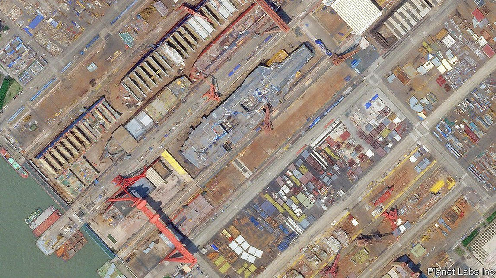

2021-08-02T02:05:50+00:00
负重起航
中国的下一艘航母将是它最大的一艘
中国海军正在快速学习如何使用它们【深度】

江南造船厂位于长江入海口的一个冲积岛上。自2009年从附近的上海搬到那里以来，它发展迅猛，为中国海军生产了大量驱逐舰、破冰船和登陆艇。它正在打造自己皇冠上的宝石。中国对此几乎只字未提，但卫星图像显示造船厂的一角有个接近完工的飞行甲板，将近15年前那里还只是一片农田。
目前，这艘即将下水的舰艇只被军事分析人士寡淡地唤作“003型”。它将是中国第二艘国产航母，也将是在中国舰队服役的最大军舰。华盛顿智库国际战略研究中心（CSIS）的专家们分析了一些卫星图片，上图就是其中之一，它由美国公司“行星实验室”（Planet Labs）于6月拍摄。他们得出的结论是，这艘舰船的长度将和纽约克莱斯勒大厦的高度相当：约320米。她将标志着中国在成为海军强国之路上的又一次飞跃。
中国加入航母竞赛的道路不同寻常。1985年，它以购买废料的形式买入一艘澳大利亚的废旧航母，然后花了数年时间研究其设计，并将甲板放在岸上进行飞行训练。13年后，中国投资者购买了一艘造了一半的苏联航母，把它从乌克兰拖回中国，声称要把它改造成一个海上赌场。结果海军将它翻新，它于2012年开始服役，命名为“辽宁号”。这又帮助中国仿制出了“山东号”，它于2019年12月服役，并一直在进行海试。
官方媒体称，003型可能在今年下水。但是建造航母和出海航行可不是一回事。驾驶飞机从摇晃的甲板上起飞很困难。美国在海军航空最初的发展阶段折损了成千上万喷气飞机和飞行员。要保证航母不受导弹和潜艇的攻击也很难，把它和其他军舰整合成一个航母“打击群”也一样。去年9月一位美国海军上将曾说：“我们花了一百多年才做到。”中国希望能更快。
有迹象表明，中国正在加快步伐。去年，中国海军同时让两艘航母出海。4月，辽宁号穿过日本冲绳岛以南的宫古海峡，在台湾地区附近和南海演习，然后原路返回。它的护卫舰艇包括全球最强驱逐舰之一的“刃海”级驱逐舰，以及一艘“福峪”级补给舰，可以为远离本土的航母打击群提供补给。
中国的进步让一些西方分析人士刮目相看。“考虑到他们的起点，他们已经做得很好了。”美国退役海军少将马克·蒙哥马利（Mark Montgomery）说。他曾在太平洋指挥一个航母打击群。他说，中国当初几乎无经验可循，除了“历史频道的纪录片”和偶尔走马观花地看两眼美国航母——在双方关系良好的年代，中国海军参观过美国军舰。即便如此，凭一艘在上世纪80年代初设计的航母和另一艘以它为基础的航母也很难构成先进的海上力量。“从美国海军的角度来看，我并不担心，” 蒙哥马利表示，“它们只是我们潜艇的靶子。”
003型的作用便是构建尖端力量。CSIS估计她至少已经比自己的前辈长了10米。研究中国武装力量的里克·乔（Rick Joe）认为，她很可能在未来很多年里都是世界上最大的非美国航母，而且“可能是同期内最强大的常规动力航母”。与山东号的20多架飞机相比，她将拥有更大的甲板，并能容纳更多飞机。
比航母大小更重要的是舰载机的起飞方式。与英国最新的航母一样，辽宁号和山东号的跑道末端都是上翘的，就像滑雪跳台一样，这限制了起飞重量。003型预计将配备弹射器，目前使用这一系统的只有美国和法国。因此她能放飞搭载更多燃料和弹药的战机——而且还能放飞其他类型的飞机。现有航母主要依靠陆基飞机执行机载雷达监测、反潜作战和空中加油等重要任务。003型自己就可以搭载这些飞机，因此敢开赴更远海域。
中国海军不打算止步于此。人们普遍认为003型的下一代正在规划中。它可能是核动力的。这将是航母性能的又一个跨越式发展。它可以携带更多飞机燃料，而不是自身的动力燃料。没有了燃气轮机，就会有更多的空间存放武器和货物。核反应堆还可以为更强大的弹射器提供动力——这些弹射器使用电磁感应发动机而不是蒸汽——最终还可以用高能激光击落导弹。
掌握这些技术、学会在海上开展高强度空中作战将需要多年时间。美国航母每天可以放飞并回收10至12架飞机十几次。中国海军远远达不到这个速度。伦敦国王学院的阿莱西奥·帕塔拉诺（Alessio Patalano）说，中国的舰载机轻装简行，就算与欧洲同行相比也是如此。“我还没见过一张中国舰载机从甲板上满载起飞的照片。”他说。
不过，中国海军会有大量的练习机会。美国印太司令部认为中国到2025年将拥有四艘航母；英国国防情报机构估计到2030年可能会有五艘之多。专家一致认为，中国计划最终将打造一支拥有六到十艘航母的舰队。这样一来，它与世界最大规模的美国11艘航母舰队就只有一步之遥。
美国和中国的航母不太可能短兵相接。早在双方舰载机发生冲突之前，航母就会被导弹瞄准，这些导弹会从数百乃至数千公里的海上或陆地发射。“中国不会将航母部署在前线。”北京大学的胡波表示。但是，在和平时期，航母是力量的有力象征。1996年两岸局势剑拔弩张之时，美国向台湾海峡派遣了两艘航母，这让中国领导人刻骨铭心。航母还可以帮助中国打败一个较弱的对手。辽宁号赫然进入南海，暗示着风雨欲来。航空母舰在其周围的船只上方构筑了一个空中保护罩，让整个船队能够自信远航。003型未来的舰载机群规模几乎和整个菲律宾空军一样大。
中国的军事行动不一定仅限于太平洋——今年，中国在它位于红海港口国家吉布提的海军基地新建了一个大型码头，中国航母将可以在那里停靠，从而定期前往印度洋。003型可能将要去到你附近的某个港口。
2021-08-02T02:05:50+00:00
Carry that weight
China’s next aircraft-carrier will be its biggest
The Chinese navy is fast learning how to use them
JIANGNAN SHIPYARD lies on an alluvial island at the mouth of the Yangzi river. It has grown rapidly since it moved there from nearby Shanghai in 2009, churning out destroyers, icebreakers and landing craft for the Chinese navy. The jewel in its crown is under construction. China is saying little about it, but satellite imagery reveals a near-complete flight deck in a corner of the yard where, less than 15 years ago, there was only farmland.
For now, the vessel-to-be is blandly known to military analysts as the Type 003. It will be China’s second domestically built aircraft-carrier and the largest ship that has ever served in the Chinese fleet. Experts at the Centre for Strategic and International Studies (CSIS), a think-tank in Washington, have analysed satellite pictures such as the one above, which was taken in June by Planet Labs, an American firm. They conclude that the ship will be about as long as New York’s Chrysler Building is high: about 320 metres. She will mark another leap forward in China’s advance as a naval power.
China got into the carrier game by an unusual route. In 1985 it bought a clapped-out Australian carrier for scrap, then spent years studying its design and putting its deck ashore for flying practice. Thirteen years later Chinese investors purchased a half-built Soviet carrier and towed it from Ukraine to China, purportedly to turn it into a floating casino. Instead it was refurbished by the navy and commissioned in 2012 as the Liaoning. That helped China to build a knock-off, the Shandong, which was commissioned in December 2019 and has been undergoing sea trials.
The Type 003 could be launched this year, state media say. But building carriers is not the same as sailing them. Flying planes off wobbly decks is hard. In America, thousands of jets and pilots were lost in the formative years of naval aviation. It is also difficult to keep a carrier safe from missiles and submarines, and to integrate one into a “strike group” of warships. “It’s taken us over 100 years to get that right,” noted an American admiral in September. China hopes to be quicker.
There are signs that it is upping the tempo. Last year the navy put both of its carriers to sea at the same time. In April the Liaoning sailed through the Miyako Strait, south of the Japanese island of Okinawa; exercised near Taiwan and in the South China Sea; and returned the same way. Its escorts included the Renhai-class destroyer, one of the world’s most capable ships of its kind, as well as a Fuyu-class support vessel, which can replenish carrier strike-groups far from home.
Some Western analysts are impressed by China’s progress. “Considering what they had to start with, they’ve done a very good job,” says Mark Montgomery, a retired American rear-admiral who commanded a carrier strike-group in the Pacific. China had little to go on, he says, other than “History Channel documentaries” and occasional glimpses of American carriers—back in friendlier times when Chinese sailors were given tours of American ships. Even so, a carrier designed in the early 1980s, and another based on it, hardly represent the cutting-edge of sea power. “I don’t worry from a US Navy point of view,” says Mr Montgomery. “These are just targets for our submarines.”
That is where the Type 003 comes in. CSIS reckons she is already 10 metres longer than her predecessors. She is likely to be the world’s largest non-American carrier for many years, says Rick Joe, who studies China’s armed forces, and “perhaps the most capable conventionally powered carrier of its era”. She will have a larger deck and room for more jets than the Shandong’s complement of around two dozen.
More important than the ship’s size is the way that planes will take off from her. The runways of both the Liaoning and the Shandong, like those of Britain’s newest carriers, are curved at their ends like ski jumps, which limits take-off weight. The Type 003 is expected to have a catapult, a system currently used only by America and France. This would allow her to launch planes with more fuel and weapons—and not just fighter jets. The existing carriers rely largely on land-based aircraft for vital tasks such as monitoring by airborne radar, anti-submarine warfare and aerial refuelling. The Type 003 could accommodate such planes, and thus venture farther.
The Chinese navy does not plan to stop there. It is widely assumed that the Type 003’s successor is being planned. It may be nuclear-powered. That would mark another step-change in capability. More fuel could be carried for planes, rather than for propulsion. The absence of a gas turbine would leave more room for weapons and cargo. A nuclear reactor could also power more potent catapults—ones that use electromagnetic induction motors, rather than steam—and, eventually, high-energy lasers for shooting down missiles.
Mastering these technologies and learning the craft of conducting high-intensity air operations at sea will take years. American carriers can launch and recover waves of 10-12 aircraft more than a dozen times a day. The Chinese navy is far from matching this pace. Its planes are lightly armed, even compared with European counterparts, says Alessio Patalano of King’s College London. “I’ve yet to see a single picture of a Chinese plane taking off from a deck with a full payload,” he says.
Yet the Chinese navy will get plenty of practice. America’s Indo-Pacific Command suggests that China will operate four carriers by 2025. British defence intelligence reckons that it may have as many as five by 2030. The expert consensus is that China plans eventually to build a fleet of somewhere between six and ten. That would put it within spitting distance of America’s fleet of 11, the world’s largest.
American and Chinese carriers are unlikely to be pitted against one another at close quarters. They would be targeted by missiles launched from hundreds if not thousands of kilometres away, from sea or land, long before their jets would clash. “China would not deploy its carriers in the front line,” says Hu Bo of Peking University. But, in peacetime, carriers are potent symbols of power. America’s dispatch of two towards the Taiwan Strait during an escalation of cross-strait tension in 1996 is seared in the memory of Chinese leaders. And carriers could help China to defeat a weaker adversary. The Liaoning’s prominent foray into the South China Sea hints at things to come. Carriers extend a protective aerial bubble over the ships around them. That allows their whole flotilla to patrol farther with confidence. The future air wing of the Type 003 will be almost as large as the entire air force of the Philippines.
And China’s sallies need not be confined to the Pacific—a large pier added this year to China’s naval base in the Red Sea port-state of Djibouti will allow Chinese carriers to dock there and thus make regular trips to the Indian Ocean. The Type 003 may be coming to a port near you. ■
2021-08-02T02:05:50+00:00
負重起航
中國的下一艘航母將是它最大的一艘
中國海軍正在快速學習如何使用它們【深度】
江南造船廠位於長江入海口的一個沖積島上。自2009年從附近的上海搬到那裡以來，它發展迅猛，為中國海軍生產了大量驅逐艦、破冰船和登陸艇。它正在打造自己皇冠上的寶石。中國對此幾乎隻字未提，但衛星圖像顯示造船廠的一角有個接近完工的飛行甲板，將近15年前那裡還只是一片農田。
目前，這艘即將下水的艦艇只被軍事分析人士寡淡地喚作“003型”。它將是中國第二艘國產航母，也將是在中國艦隊服役的最大軍艦。華盛頓智庫國際戰略研究中心（CSIS）的專家們分析了一些衛星圖片，上圖就是其中之一，它由美國公司“行星實驗室”（Planet Labs）於6月拍攝。他們得出的結論是，這艘艦船的長度將和紐約克萊斯勒大廈的高度相當：約320米。她將標誌着中國在成為海軍強國之路上的又一次飛躍。
中國加入航母競賽的道路不同尋常。1985年，它以購買廢料的形式買入一艘澳大利亞的廢舊航母，然後花了數年時間研究其設計，並將甲板放在岸上進行飛行訓練。13年後，中國投資者購買了一艘造了一半的蘇聯航母，把它從烏克蘭拖回中國，聲稱要把它改造成一個海上賭場。結果海軍將它翻新，它於2012年開始服役，命名為“遼寧號”。這又幫助中國仿製出了“山東號”，它於2019年12月服役，並一直在進行海試。
官方媒體稱，003型可能在今年下水。但是建造航母和出海航行可不是一回事。駕駛飛機從搖晃的甲板上起飛很困難。美國在海軍航空最初的發展階段折損了成千上萬噴氣飛機和飛行員。要保證航母不受導彈和潛艇的攻擊也很難，把它和其他軍艦整合成一個航母“打擊群”也一樣。去年9月一位美國海軍上將曾說：“我們花了一百多年才做到。”中國希望能更快。
有跡象表明，中國正在加快步伐。去年，中國海軍同時讓兩艘航母出海。4月，遼寧號穿過日本沖繩島以南的宮古海峽，在台灣地區附近和南海演習，然後原路返回。它的護衛艦艇包括全球最強驅逐艦之一的“刃海”級驅逐艦，以及一艘“福峪”級補給艦，可以為遠離本土的航母打擊群提供補給。
中國的進步讓一些西方分析人士刮目相看。“考慮到他們的起點，他們已經做得很好了。”美國退役海軍少將馬克·蒙哥馬利（Mark Montgomery）說。他曾在太平洋指揮一個航母打擊群。他說，中國當初幾乎無經驗可循，除了“歷史頻道的紀錄片”和偶爾走馬觀花地看兩眼美國航母——在雙方關係良好的年代，中國海軍參觀過美國軍艦。即便如此，憑一艘在上世紀80年代初設計的航母和另一艘以它為基礎的航母也很難構成先進的海上力量。“從美國海軍的角度來看，我並不擔心，” 蒙哥馬利表示，“它們只是我們潛艇的靶子。”
003型的作用便是構建尖端力量。CSIS估計她至少已經比自己的前輩長了10米。研究中國武裝力量的里克·喬（Rick Joe）認為，她很可能在未來很多年裡都是世界上最大的非美國航母，而且“可能是同期內最強大的常規動力航母”。與山東號的20多架飛機相比，她將擁有更大的甲板，並能容納更多飛機。
比航母大小更重要的是艦載機的起飛方式。與英國最新的航母一樣，遼寧號和山東號的跑道末端都是上翹的，就像滑雪跳台一樣，這限制了起飛重量。003型預計將配備彈射器，目前使用這一系統的只有美國和法國。因此她能放飛搭載更多燃料和彈藥的戰機——而且還能放飛其他類型的飛機。現有航母主要依靠陸基飛機執行機載雷達監測、反潛作戰和空中加油等重要任務。003型自己就可以搭載這些飛機，因此敢開赴更遠海域。
中國海軍不打算止步於此。人們普遍認為003型的下一代正在規劃中。它可能是核動力的。這將是航母性能的又一個跨越式發展。它可以攜帶更多飛機燃料，而不是自身的動力燃料。沒有了燃氣輪機，就會有更多的空間存放武器和貨物。核反應堆還可以為更強大的彈射器提供動力——這些彈射器使用電磁感應發動機而不是蒸汽——最終還可以用高能激光擊落導彈。
掌握這些技術、學會在海上開展高強度空中作戰將需要多年時間。美國航母每天可以放飛並回收10至12架飛機十幾次。中國海軍遠遠達不到這個速度。倫敦國王學院的阿萊西奧·帕塔拉諾（Alessio Patalano）說，中國的艦載機輕裝簡行，就算與歐洲同行相比也是如此。“我還沒見過一張中國艦載機從甲板上滿載起飛的照片。”他說。
不過，中國海軍會有大量的練習機會。美國印太司令部認為中國到2025年將擁有四艘航母；英國國防情報機構估計到2030年可能會有五艘之多。專家一致認為，中國計劃最終將打造一支擁有六到十艘航母的艦隊。這樣一來，它與世界最大規模的美國11艘航母艦隊就只有一步之遙。
美國和中國的航母不太可能短兵相接。早在雙方艦載機發生衝突之前，航母就會被導彈瞄準，這些導彈會從數百乃至數千公里的海上或陸地發射。“中國不會將航母部署在前線。”北京大學的胡波表示。但是，在和平時期，航母是力量的有力象徵。1996年兩岸局勢劍拔弩張之時，美國向台灣海峽派遣了兩艘航母，這讓中國領導人刻骨銘心。航母還可以幫助中國打敗一個較弱的對手。遼寧號赫然進入南海，暗示着風雨欲來。航空母艦在其周圍的船隻上方構築了一個空中保護罩，讓整個船隊能夠自信遠航。003型未來的艦載機群規模幾乎和整個菲律賓空軍一樣大。
中國的軍事行動不一定僅限於太平洋——今年，中國在它位於紅海港口國家吉布提的海軍基地新建了一個大型碼頭，中國航母將可以在那裡停靠，從而定期前往印度洋。003型可能將要去到你附近的某個港口。